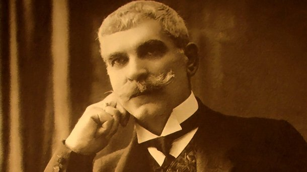
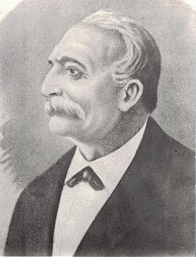

"И ний сме дали нещо на света, на славяни книга да четат."
Народни будители
Кои са народните будители? Свети Кирил и свети Методий, Паисий Хилендарски, Петър Берон, братя Миладинови, Петко Славейков, Захари Стоянов, Васил Левски, Христо Ботев, Иван Вазов и още много българи. Те са помогнали на народа да се събуди от мрака и незнанието. Първи ноември е Ден на народните будители. На този ден отдаваме почит на родолюбивите просветители. В годините на робство и безправие, те са отваряли очите на българите за светлината на буквите и знанието, за нашето славно минало.
Паисий Хилендарски, често наричан още Отец Паисий, e български народен будител, духовник и светия, автор на „История славянобългарска“. Изразените в труда му идеи за национално възраждане и освобождение на българския народ карат много учени да го сочат за основоположник на Българското възраждане.
Софроний Врачански е български духовник, врачански епископ, народен будител и пръв последовател на делото на Паисий Хилендарски.
Васил Левски е идеолог и организатор на българската национална революция, основател на Вътрешната революционна организация (ВРО). Известен е и като Апостола на свободата, заради организирането и разработването на революционна мрежа за освобождаване на България от османско владичество.

Петър Берон е авторът на „Рибния буквар“. Той въвел нов начин на преподаване, придал европейски вид на нашето образование.

Христо Ботев е национален герой, революционер, поет и публицист, оставил след себе си велики стихотворения като „Майце си“, „Към брата си“, „На прощаване“, „Елегия“, „До моето първо либе“, „Хайдути“, „Хаджи Димитър“, „Обесването на Васил Левски“ и много други.

Иван Вазов е български поет, писател и драматург, наричан често „Патриарх на българската литература“.

Любен Каравелов е български поет, писател, енциклопедист, журналист, етнограф и безспорен национален герой допринася съществено за развитието на обществената мисъл в България през Възраждането
Неофит Рилски е български монах, учител и художник. Една от водещите фигури в българското просветно движение през първата половина на XIX век, той е определян от известния българист Константин Иречек като „патриарх на българските учители и книжовници“.
Васил Априлов е български стопански и просветен деец, дарител, писател от времето на Българското възраждане.